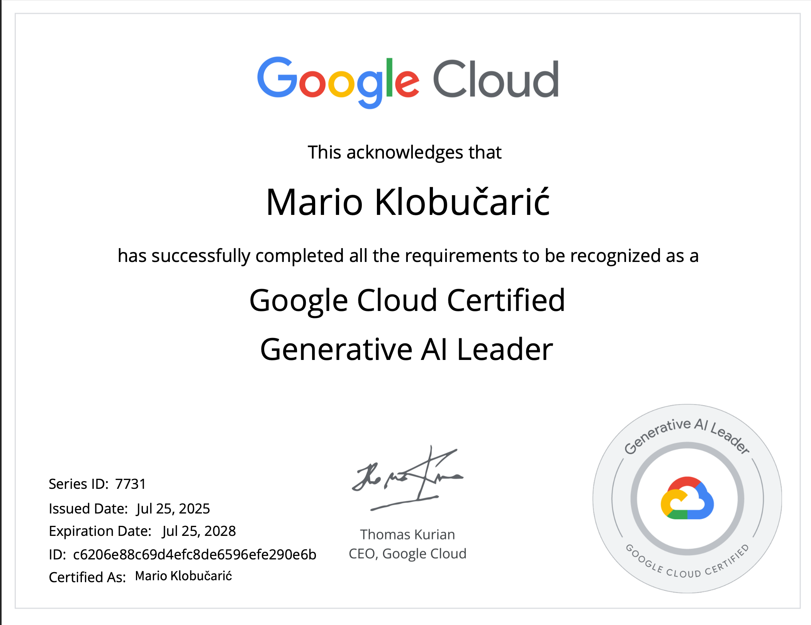
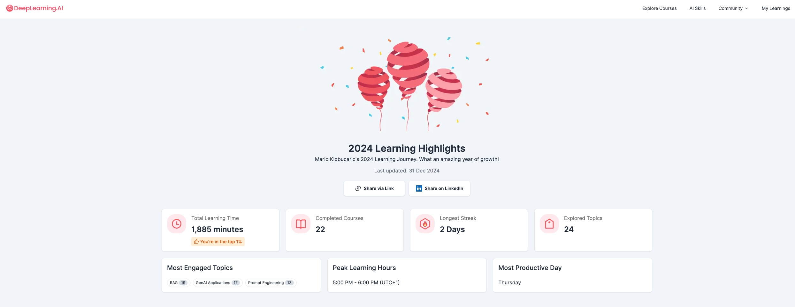

RESUME
WORK EXPERIENCE
techXflow d.o.o. (November 2023 - Present)
Position: AI Forward Deployed Engineer
Technical School Čakovec (September 2018 - November 2023):
Building production AI systems and providing strategic AI consulting for enterprise clients.
-
Selected Projects (2024–2026):
- AI Citizen Assistant – Municipality of Legrad (2026): Trilingual (HR/HU/EN) RAG assistant giving residents source-cited answers about local-government services, each linked to the exact official document. EU-hosted; multi-LLM, GCP.
- Manufacturing BI Platform (2026): Dashboards turning ERP data into management analytics across production, warehouse, sales and procurement, with drill-down and automatic anomaly detection. Python data pipeline, SQL.
- Automated Offer Generation (2026): Reads incoming technical specs (Excel/PDF), matches each line item to a product and price from the client's catalogue, and drafts a ready-to-send quote in minutes — with confidence scoring and human-in-the-loop approval.
- Linux Network Infrastructure (2026): Centralized device-fleet management with automated traffic routing, secure remote access (VPN), automatic failover and 24/7 monitoring.
- SmartWay Design Portal (2025–2026): Full-stack e-content platform with bank-transfer payment flow and a two-brand newsletter system. React 18/TypeScript, Firebase, Tailwind CSS.
- Construction Coordination Platform (Q4 2025): Web app replacing a manual Excel process for the construction sector; coordinates stakeholders, contracts and financials. Cut record-search time from 10–15 min to <30 sec. FastAPI, React 19/TypeScript, PostgreSQL, GCP Cloud Run.
- Banking Sector AI Consulting – HPB d.d. (2025): Strategic AI workshops for the management board and senior leadership at Croatia's national-level bank.
- View All Projects
-
Core Activities:
- AI product feasibility assessment and architecture design
- End-to-end development: data pipelines → backend → frontend → deployment
- Client consulting on AI strategy and implementation
- Rapid prototyping and PoC development
- More Details: techxflow.eu
Position:Teacher & Head of the Regional Competence Center
ENERGY PLUS d.o.o. (January 2016 - July 2018): - Led Comprehensive Lectures and Workshops: Covered a wide array of subjects, including coding (Python, embedded C++), embedded systems, automation, robotics, and business communication.
- Promoted a Culture of Experimentation: Fostered a learning environment that encouraged trying new things, practical application of theoretical knowledge, and viewing mistakes as essential learning steps.
- Developed Project Skills and Implementation: Guided students in acquiring project management and implementation skills, ensuring they could translate classroom learning into real-world solutions.
- Innovative Teaching Methods: Continually refreshed teaching strategies to incorporate new, practical approaches, focusing on hands-on experience and the development of practical skills essential for future challenges.
- Chair of the school's Electrical Engineering Council
- Played a prominent role in the implementation of two EU projects (EBRD - European Fund for Regional Development, ESF - European Social Fund) valued at €7.5 million
- Spearheaded multiple project-based initiatives such as drafting procurement specifications, organization of events, educational visits, partnerships
Position: Head of International Projects and Sales Network
Međimurska energetska agencija d.o.o. (January 2013 - January
2016)
- Supported top-tier international clients and presented the company at fairs
- Worked on LED lighting projects documentation and investment projects, emphasizing Energy Performance Contracting.
Position: Agency Director
DORS PROJEKT d.o.o. (August 2010 - December 2012)
- Directed agency operations, resource management, growth strategies and successfully transformed the agency's financial standing toward complete self-sustainability.
- Managed multiple energy-focused projects and campaigns, promoting, and implementing energy efficiency and renewable energy adoption.
Position: Licensed Designer
ZG-PROJEKT d.o.o. (November 2007 - July 2010) - Designed electrical installations for various sectors, including “smart home” and photovoltaic plants.
- Consulted on renewable energy regulations and privileged producer status.
Position: Designer
V-elin d.o.o. (June 2006 - September 2007) - Designed electrical installations for highways, tunnels, and road lighting
- Estimated savings for lighting fixture replacements
Position: Development Engineer
- Assisted in digital/analog system development and contributed to water monitoring projects.
- Prepared technical documentation and supported related software.
FORMAL EDUCATION
Faculty of Organization and Informatics, Varaždin (2017 – 2018)- 56 ECTS
- Specialization: Teacher Education (Pedagogical/Psychological/Didactic/Methodical)
- GPA: 4.55/5
- University Specialist of Strategic Entrepreneurship, 60 ECTS
- Thesis: Leadership in Social Responsibility & Social Entrepreneurship
- GPA: 4.6/5
- Graduate Electrical Engineer (Industrial Electronics), 274 ECTS
- Thesis: Multichannel Receiver for Surface Electromyography
- GPA: 4.15/5
Awards: 1st (3x) & 3rd (3x) in County Mathematics Competitions (13-18 years)
INFORMAL EDUCATION
Google Cloud Certification
-
2025 - Generative AI Leader - Certificate
link

DeepLearning.AI
-
2025 - Agentic AI
link

Coursera
Singularity University
- 2017 - Exponential Foundations Series – Online education about upcoming technologies and potentials
Udemy courses
- Google Cloud Platform(GCP), AutoML and VertexAI on GCP, LLM Fine Tuning on OpenAI, LangChain,Dart&Flutter 3, OpenAI Python API, Deep Learning, SQL, Math for Data Science, Machine Learning & Data Science, Django Full Stack Web, Raspberry PI Full Stack, The Fundamentals of Digital Marketing, Python, Fusion 360
Other online educations:
-
Vector Databases, Building and Evaluating Advanced RAG, AI
Applications with Gradio, Open Source Models with Hugging Face,
LangChain, LlamaIndex, Unstructured data, Multi-AI agents
frameworks

Educational courses completed within the regional competence
center:
- Education on didactic equipment for renewable energy sources (Gunt, Hera, Lexsolar), automation (Lucas Nuelle), collaborative robots (Universal Robots)
- Leadership and teacher education
PROJECTS
- Enterprise AI consulting (banking, pharmaceutical sectors)
- Production agentic RAG platforms with multi-LLM support
- Full-stack applications (FastAPI + React + PostgreSQL)
- Document extraction and automation pipelines
- Text-to-SQL systems with LangGraph
- Custom LLM fine-tuning workflows (Vertex AI)
- View Detailed Project Portfolio
MEMBERSHIP AND LICENSES
- Croatian Chamber of Electrical Engineers (Membership status: on hold)
- Electrical Installation Licensed Designer
- Licensed Energy Certifier (2013-2016)
LANGUAGES
Croatian: Native proficiency
English: Advanced proficiency
German: Advanced proficiency
English: Advanced proficiency
German: Advanced proficiency
TECHNICAL SKILLS
- AI & LLM Development: Claude, GPT, Gemini, Open-source models; LangChain, LangGraph, CrewAI, LlamaIndex, HuggingFace; RAG architectures, Vector Databases (Weaviate, ChromaDB); Prompt Engineering, LLM Evaluation & Observability (LangSmith)
- Backend & Cloud: Python, FastAPI, Flask, SQL, PostgreSQL; GCP (Cloud Run, Cloud Functions, Cloud Storage), AWS, Firebase; Docker, REST APIs, OAuth/JWT Authentication; N8N Workflow Automation
- Frontend & Full-Stack: JavaScript/TypeScript, React, Flutter
- Data Engineering: ETL Pipelines (Prefect, GCP Workflows, Airflow), Data Processing, OCR + LLM Document Intelligence, Text-to-SQL with open-source models
- Data Science & ML: NumPy, Pandas, Matplotlib, SciKit-Learn
- Development Approach: AI-assisted development, Iterative delivery, rapid prototyping, Data-centric methodology
- Dev Tools: Visual Studio Code, Cursor, Git/GitHub, Jupyter Notebook
ADDITIONAL INFO
- Driver's license